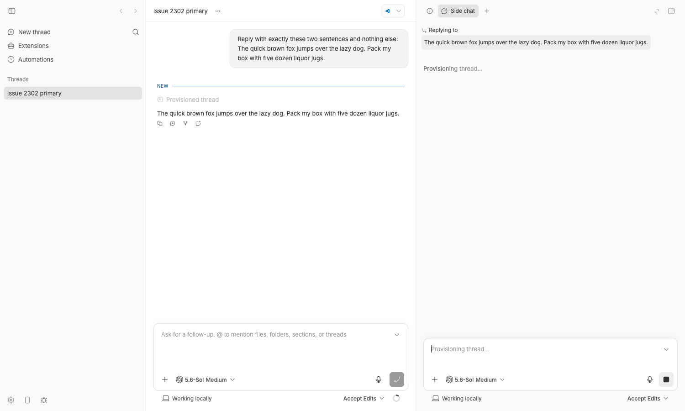
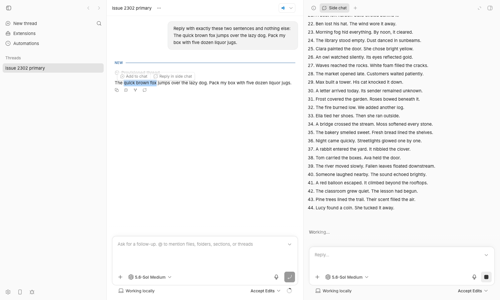
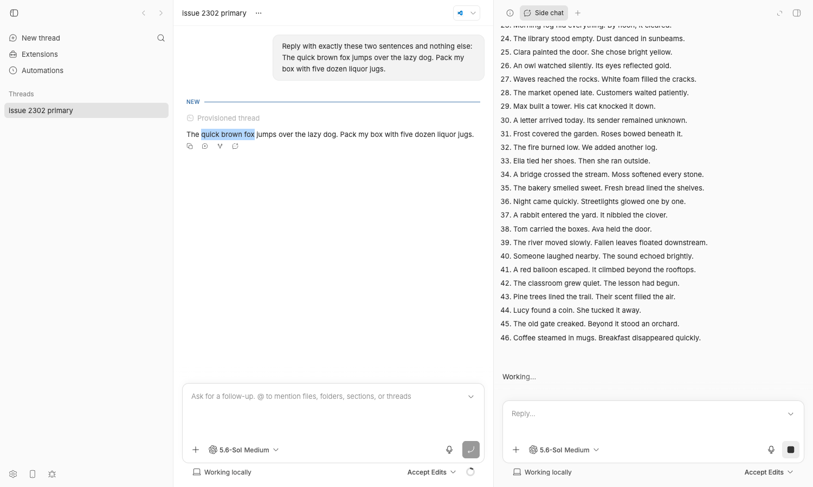
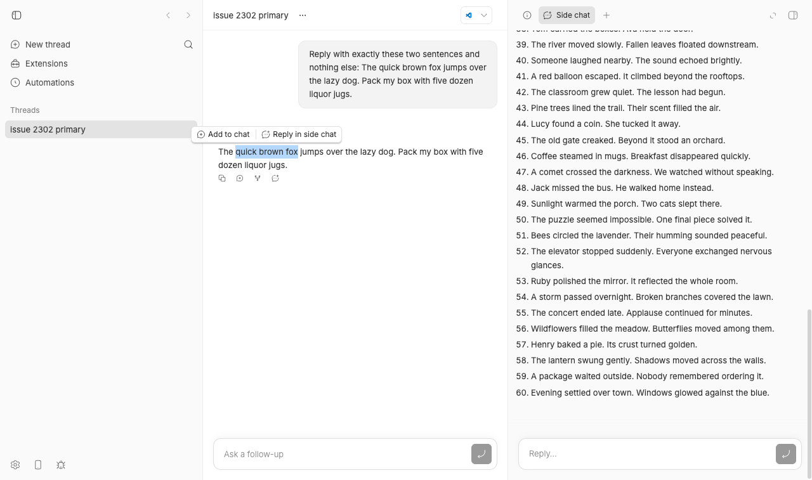

#2302 · Unrelated side-chat scrolling dismisses the primary timeline selection menu
Verdict: REPRODUCED (live in the browser with a real streaming Codex side chat, and with a failing unit test at the exact code path) · Root-cause confidence: high
1. TL;DR
When you select text in an assistant message of the main thread, a small floating menu appears with "Add to chat" and "Reply in side chat". If a side chat is streaming in the right-hand panel at the same time, that menu vanishes on its own within a fraction of a second, before you can click anything. Nothing in the main thread moved; only the side-chat panel scrolled to follow its own streamed text.
The cause is a single listener in TimelineSelectionMenu: while the menu is open it subscribes to scroll on window in the capture phase, so it hears the scroll event of every scroll container in the document, and it calls onDismiss() unconditionally without looking at which element scrolled. The side chat's BottomAnchoredScrollBody sets scrollTop on its own scroll area each time streamed content grows, which fires exactly such a scroll event. The menu's anchor rect is still valid, but the menu closes anyway. Both actions disappear together because they are rendered by the same menu from the same activeSelection state.
2. Claims vs findings
| Claim from the issue | Status | Evidence |
|---|---|---|
| Side-chat streaming in the secondary panel dismisses an open selection menu in the primary timeline before the user can click. | Verified | Live repro: menu opened at t=…311 ms, one capture-phase scroll event from aside div.thread-scrollbar at t=…604, menu gone at t=…606 (2 ms later). 299 ms total lifetime. See §4 and browser-run-1.json. |
| Both "Add to chat" and "Reply in side chat" disappear together. | Verified | Menu labels captured while open: ["Add to chat","Reply in side chat"]; both rendered by one TimelineSelectionMenu instance driven by activeSelection (ThreadTimelineRows.tsx#L2532-L2539). |
TimelineSelectionMenu installs a capture-phase scroll listener on window and dismisses on every scroll without checking the target. | Verified | TimelineSelectionMenu.tsx#L141-L152: window.addEventListener("scroll", dismiss, true), dismiss = () => onDismiss(). Introduced in 6a0b0dfd8 (#85) and unchanged since. |
The side chat is a contained ThreadChat with its own scroll container, and BottomAnchoredScrollBody restores scroll-to-bottom as content grows. | Verified | plugins/side-chat/app.tsx#L303-L316 (layout="contained"); bottom-anchored-scroll-body.tsx#L380-L389 sets scrollArea.scrollTop = maxScrollOffset. My instrumentation logged 155 scroll events during one side-chat turn, all with target div.thread-scrollbar inside the <aside>, none from <main>. |
Smallest repro: render the menu, dispatch scroll from an unrelated sibling, onDismiss is called once. | Verified | Repro test fails on 494f66526 with expected "vi.fn()" to not be called at all, but actually been called 1 times (log). |
| A parent rerender with an equivalent selection does not dismiss. | Verified (by code) | The only dismiss paths are the scroll/resize effect, Escape, Radix outside-interaction, and an action click. A rerender fires none of them; the effect is keyed on [open, onDismiss]. |
| "Side chat experiment enabled" is a precondition. | Stale / not needed | At 494f66526 the side-chat plugin is a builtin with defaultEnabled: true (apps/server/src/services/plugins/builtin-registry.ts:136-140); no experiment toggle exists. I reproduced on a fresh data dir with no settings changes. |
bb 0.39.0 / main at fff3ae82, Node 24, macOS 26.3. | Unverified as stated | I reproduced on 494f66526 (newer than the reported commit) with Node 22.23.1 on macOS 26.5.2; the cited code is identical at both commits. Nothing on origin/main after 494f66526 touches these files (checked 2026-08-24). |
3. Environment
- bb source at
494f66526913557ab076e048218236f0a6610927(origin/main as of 2026-08-24; the six later commits on origin/main are test-stabilization changes that do not touch the files involved). - macOS 26.5.2 (25F84), Apple Silicon; Node v22.23.1; pnpm from PATH; Chrome driven by
doobie(headless profile, 1500×900 viewport). - Provider:
codex, codex-cli 0.149.1, model "5.6-Sol", medium reasoning (the default on this instance). - Dev instance from
scripts/bb-dev-app currentin my worktree: Apphttp://localhost:15495, Serverhttp://localhost:23495, host daemon127.0.0.1:31495, data dir~/.bb-dev/bb-machines-HOST.getbb.app-checkouts-bb-.claude-worktrees-wf_846839f8-f8a-39-d1c86a0f6141(deleted at cleanup). Projectproj_personal, threadthr_ve3n9w94qc.
4. Minimal reproduction
4a. Unit-level (no browser, ~5 s)
- Save
TimelineSelectionMenu.issue2302.test.tsxnext toapps/app/src/components/thread/timeline/TimelineSelectionMenu.tsx. - Run it from
apps/app:cd apps/app pnpm exec vitest run src/components/thread/timeline/TimelineSelectionMenu.issue2302.test.tsx
- Expected: all three tests pass. Actual on 494f66526 (
full log):❯ src/components/thread/timeline/TimelineSelectionMenu.issue2302.test.tsx (3 tests | 1 failed) × keeps the menu open when an unrelated sibling panel scrolls FAIL TimelineSelectionMenu (#2302) > keeps the menu open when an unrelated sibling panel scrolls AssertionError: expected "vi.fn()" to not be called at all, but actually been called 1 times ❯ src/components/thread/timeline/TimelineSelectionMenu.issue2302.test.tsx:69:27 Tests 1 failed | 2 passed (3)The two passing tests pin the behaviour that must be kept: a scroll of the selection's own ancestor, and a scroll of the document, still dismiss.
Repro test source (inline)
// @vitest-environment jsdom
//
// Repro for get-bb/bb#2302: a scroll event from an UNRELATED sibling element
// (e.g. the side-chat panel's own scroll container auto-following streamed
// Markdown) must not dismiss the primary timeline's selection menu.
//
// On the base commit (494f66526) the first test fails: TimelineSelectionMenu
// installs a capture-phase `scroll` listener on `window` and calls
// `onDismiss` for every scroll event in the document, whatever element moved.
import { cleanup, fireEvent, render, screen } from "@testing-library/react";
import { afterEach, describe, expect, it, vi } from "vitest";
import { TimelineSelectionMenu } from "./TimelineSelectionMenu";
import type { MessageProseSelection } from "./SelectableMessageProse";
afterEach(() => {
cleanup();
document.body.innerHTML = "";
vi.restoreAllMocks();
});
function mountPanels() {
// Two sibling scroll containers under one document, like the primary
// timeline (which contains the selected prose) and the side-chat panel.
const primary = document.createElement("div");
primary.setAttribute("data-testid", "primary-timeline");
const prose = document.createElement("p");
prose.textContent = "The quick brown fox jumps over the lazy dog.";
primary.append(prose);
const sidebar = document.createElement("div");
sidebar.setAttribute("data-testid", "side-chat-panel");
document.body.append(primary, sidebar);
const selection: MessageProseSelection = {
text: "quick brown fox",
rect: new DOMRect(10, 10, 100, 20),
// The node the selected text lives in (added by the proposed fix; an
// extra property that the base commit simply ignores).
sourceNode: prose,
sourceSeqEnd: 12,
};
return { primary, sidebar, selection };
}
function renderMenu(selection: MessageProseSelection, onDismiss: () => void) {
// Render the menu into its own container so React does not clear the
// hand-built panel DOM above.
render(
<TimelineSelectionMenu
selection={selection}
onAddToChat={vi.fn()}
onDismiss={onDismiss}
/>,
);
expect(screen.getByRole("button", { name: "Add to chat" })).toBeTruthy();
}
describe("TimelineSelectionMenu (#2302)", () => {
it("keeps the menu open when an unrelated sibling panel scrolls", () => {
const onDismiss = vi.fn();
const { sidebar, selection } = mountPanels();
renderMenu(selection, onDismiss);
// The side chat's BottomAnchoredScrollBody sets `scrollTop`, which fires a
// non-bubbling `scroll` event on the sidebar element only.
fireEvent.scroll(sidebar);
// BUG: the window capture-phase listener in TimelineSelectionMenu dismisses
// for every scroll in the document, regardless of which element moved.
expect(onDismiss).not.toHaveBeenCalled();
});
it("still dismisses when a scroll ancestor of the selection scrolls", () => {
const onDismiss = vi.fn();
const { primary, selection } = mountPanels();
renderMenu(selection, onDismiss);
fireEvent.scroll(primary);
expect(onDismiss).toHaveBeenCalledTimes(1);
});
it("still dismisses when the document itself scrolls", () => {
const onDismiss = vi.fn();
const { selection } = mountPanels();
renderMenu(selection, onDismiss);
fireEvent.scroll(document);
expect(onDismiss).toHaveBeenCalledTimes(1);
});
});
4b. Live, in the app (real Codex side chat)
- Start a dev instance and a thread with a short assistant reply:
scripts/bb-dev-app current # prints App/Server URLs and data dir eval "$(scripts/bb-dev-app env)" pnpm bb:dev thread spawn --project proj_personal --provider codex --permission-mode accept-edits \ --title "issue 2302 primary" \ --prompt "Reply with exactly these two sentences and nothing else: The quick brown fox jumps over the lazy dog. Pack my box with five dozen liquor jugs." --json # => {"id":"thr_ve3n9w94qc", ...} - Open
http://localhost:<app-port>/threads/thr_ve3n9w94qc. Hover the assistant message and click its "Reply in side chat" action. The right panel opens a "Side chat" tab (screenshot below). - In the side-chat composer type
Write 60 short Markdown paragraphs, one paragraph at a time, each 2 sentences, numbered. Do not use tools.and press Enter. The side chat starts streaming and its panel follows the bottom. - While it streams, drag-select the words "quick brown fox" in the main thread's assistant message. The floating menu with "Add to chat" and "Reply in side chat" appears above the selection.
- Do nothing. Expected: the menu stays until you click it, press Escape, or scroll the main thread. Actual: it disappears within ~300 ms, the next time the side chat panel scrolls; the text stays highlighted.
Scripted version of steps 2–5 (Puppeteer via doobie): 04, 05, 06. Script 05 also installs a capture-phase scroll logger and a MutationObserver on the menu so the timeline of events is recorded; script 06 performs a real mouse.down/move/up drag.



Recorded timeline from the instrumentation (browser-run-1.json; times are Date.now() ms):
menuLog: open=true at 1787593717311 scrollLog: 1787593717604 target = div.thread-scrollbar.@container/page.col-start-1.row-start-1 in=aside(right panel) menuLog: open=false at 1787593717606 selectionText after dismiss: "quick brown fox" All 155 scroll events captured during the run had the same target (the side chat's scroll area); none came from <main>.
Repro files: 2302/repro/
5. Root cause
Mechanism. scroll events do not bubble, so a listener that wants to hear scrolls from any container must be registered on window with capture = true. TimelineSelectionMenu does exactly that while the menu is open, and its handler ignores the event entirely (TimelineSelectionMenu.tsx#L141-L152):
// Dismiss on scroll/resize rather than re-anchoring: the captured rect goes
// stale the moment the viewport moves, so closing is the honest behavior.
useEffect(() => {
if (!open || typeof window === "undefined") return;
const dismiss = () => onDismiss();
window.addEventListener("scroll", dismiss, true);
window.addEventListener("resize", dismiss);
...
}, [open, onDismiss]);
The comment states the intent: close because the captured rect "goes stale the moment the viewport moves". That is only true when a scroll ancestor of the selected text moves. A scroll in a sibling container does not move the anchor at all, but the listener cannot tell the difference because MessageProseSelection carries only text, rect and optional anchor point/side — no reference to where the text lives (SelectableMessageProse.tsx#L15-L21).
Why the side chat triggers it. The side-chat plugin renders a contained ThreadChat in the secondary panel (plugins/side-chat/app.tsx#L303-L316), which gets its own BottomAnchoredScrollBody. Each time the streamed Markdown grows, its ResizeObserver path calls restoreBottomOnce, which assigns scrollArea.scrollTop = maxScrollOffset (bottom-anchored-scroll-body.tsx#L380-L389). Every such assignment fires a scroll event on that element, which reaches the window capture listener, which calls onDismiss, which sets activeSelection to null in ThreadTimelineRows (ThreadTimelineRows.tsx#L2357-L2359). The menu is rendered from that one state, so "Add to chat" and every plugin action vanish together. Plugin apps run in the main document (no iframe), so the side chat's scroll container is part of the same event tree.
Deeper issue. This is not specific to side chats. Any scroll anywhere in the document closes the menu: the thread list in the sidebar, a horizontally scrolling code block in another message, the secondary-panel tab strip, a file preview, the composer textarea growing past its max height, or the main timeline's own auto-follow when the main thread itself is streaming (the latter moves the anchor only when the selected text is not pinned by CSS scroll anchoring, but still dismisses). TimelineSelectionMenu is also reused by SecondaryPanelSelectionActions, PierreLineSelectionActions (diff view) and ThreadTerminalView, so a selection menu in the diff panel is likewise closed by the main timeline streaming. The fix belongs in the menu's listener, not in the side chat.
6. Proposed fix (first principles)
Give the selection a handle on where it lives and dismiss only when that place actually moved. I prototyped this in my worktree; full diff: proposed-fix.diff.
apps/app/src/components/thread/timeline/SelectableMessageProse.tsx: add a requiredsourceNode: NodetoMessageProseSelectionand fill it intoMessageProseSelectionfrom the prose wrapper node (readSelectionWithinNodealready has it). Required, not optional: every producer has the node, and an optional field would just hide a default (AGENTS.md "Types And Contracts").- The other three producers fill it too:
SecondaryPanelSelectionActions.tsx(sourceNode: node),ThreadTerminalView.tsx(sourceNode: containerElement),PierreLineSelectionActions.tsx(sourceNode: containerElement ?? document, since its container ref can be null before mount anddocumentpreserves today's dismiss-on-anything behaviour in that corner). TimelineSelectionMenu.tsx: keep the capture listener, but filter:const sourceNode = selection?.sourceNode ?? null; useEffect(() => { if (!open || typeof window === "undefined") return; const dismiss = () => onDismiss(); const dismissOnAncestorScroll = (event: Event) => { const target = event.target; if ( sourceNode !== null && sourceNode.isConnected && // a detached node has no scroll ancestors; fall back to dismiss target instanceof Node && target !== document && // document scroll moves everything !target.contains(sourceNode) // sibling container: anchor did not move ) { return; } onDismiss(); }; window.addEventListener("scroll", dismissOnAncestorScroll, true); window.addEventListener("resize", dismiss); return () => { ... }; }, [open, onDismiss, sourceNode]);- Tests: the three cases in the repro file (sibling scroll keeps it open; ancestor scroll dismisses; document scroll dismisses). Update
makeSelection()in the existingTimelineSelectionMenu.test.tsxand the story to supplysourceNode.
Verification of the prototype. With the diff applied: the repro test and the existing selection tests pass (5 files, 47 tests), pnpm exec turbo run typecheck --filter=@bb/app passes (log), and in the running app (doobie-07-verify-fix.js, result) a programmatic scrollTop change on the side chat's scroll area (1151 → 1031) left the menu open, while a scroll event on the main timeline's own scroll area closed it:
"asideScroll": { "before": 1151, "after": 1031 }, "openAfterAsideScroll": true,
"mainScroll": { "before": 0, "after": 0, "dispatched": true }, "openAfterMainScroll": false

What could go wrong. (a) Scroll events whose target is inside a shadow root or a different document would have target.contains(sourceNode) === false and be ignored; none of bb's scroll containers are in shadow DOM today. (b) A row that is virtualised out and back in gets a new prose node; the stored sourceNode becomes disconnected, which the isConnected guard turns back into "dismiss on any scroll" rather than "never dismiss". (c) The alternative of re-measuring the live Range on each scroll (no contract change) would also work but forces a layout read inside scroll handlers and fails once the native selection is cleared; the node check is O(depth) and needs no layout. (d) Holding a DOM node in React state is fine here: the state is cleared on dismiss and the node is already retained by the mounted row.
7. PR review
No open pull request is linked to this issue (checked 2026-08-24 with gh).
8. Related issues
- None found for the same behaviour.
gh search issues --repo get-bb/bb "selection menu"returns only #2302; "side chat scroll" returns #2302 and #2301 ("Desktop tab scrolling stops outside tab button hit area"), which is unrelated. - Origin of the listener: commit
6a0b0dfd8"Thread forking + session-based side chats + timeline scroll preservation (#85)".
9. Appendix
Commands run
gh issue view 2302 --repo get-bb/bb --json ... # issue body, no comments, type=Bug, labels ui, side-chat
git checkout 494f66526 && git fetch origin main
git log --oneline 494f66526..origin/main -- apps/app/src/components/thread/timeline/TimelineSelectionMenu.tsx \
apps/app/src/components/thread/timeline/ThreadTimelineRows.tsx plugins/side-chat \
apps/app/src/components/ui/bottom-anchored-scroll-body.tsx # (empty: nothing newer touches these)
git log --oneline -S'window.addEventListener("scroll", dismiss, true)' -- .../TimelineSelectionMenu.tsx # 6a0b0dfd8
pnpm install --frozen-lockfile --prefer-offline
pnpm exec turbo run build
cd apps/app && pnpm exec vitest run src/components/thread/timeline/TimelineSelectionMenu.issue2302.test.tsx # fails on base
scripts/bb-dev-app current
pnpm bb:dev thread spawn --project proj_personal --provider codex --permission-mode accept-edits --title "issue 2302 primary" --prompt "..." --json
doobie run 2302/repro/doobie-0{2,4,5,6}-*.js # live repro + instrumentation
# prototype fix applied in worktree (see proposed-fix.diff)
cd apps/app && pnpm exec vitest run ... TimelineSelectionMenu*.test.tsx SelectableMessageProse*.test.* ThreadTerminalView.test.ts # 47 passed
pnpm exec turbo run typecheck --filter=@bb/app # ok
git stash push -- apps/app/src && (re-run repro test on pristine base: 1 failed | 2 passed) && git stash pop
doobie run 2302/repro/doobie-07-verify-fix.js # menu survives aside scroll, dismisses on main scroll
pnpm dev:stop; pkill -f <worktree>; rm -rf ~/.bb-dev/<my data dir> /tmp/bb-2302-qa; lsof check (ports free)
Notes
- The dev instance was terminated once externally (exit 143) between the repro and the fix verification; it was restarted with the same data dir and the same thread, so the fix verification screenshot shows the finished 60-paragraph side chat rather than a streaming one. The programmatic
scrollTopassignment used for verification is the same operationrestoreBottomOnceperforms during streaming. 2302-00-app-thread.pngand2302-01-before-thread-loaded.pngare the initial page loads (skeleton and loaded thread) kept for completeness;2302-03-side-chat-streaming-started.pngshows the side chat prompt just after submit.- Artifacts:
browser-run-1.json(full scroll/menu log of the live repro),browser-verify-fix.json,vitest-base-494f66526.txt,vitest-with-fix.txt,typecheck-with-fix.txt,proposed-fix.diff.